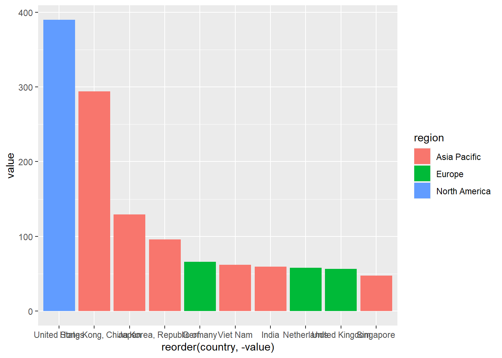

Quarto enables you to weave together content and executable code into a finished document. To learn more about Quarto see https://quarto.org.
Running Code
When you click the Render button a document will be generated that includes both content and the output of embedded code. You can embed code like this:
# A tibble: 691,923 × 5
reporter flow partner year value
<dbl> <chr> <dbl> <dbl> <dbl>
1 213 I 186 2008 156130202
2 213 E 174 2008 117661208
3 213 E 172 2008 31986252
4 213 E 134 2008 1507966544
5 213 I 181 2008 2407260
6 213 I 182 2008 80414681
7 213 I 676 2008 991884
8 213 E 258 2008 107246580
9 614 I 110 2008 15302709034
10 213 E 648 2008 2660760
# … with 691,913 more rows
# ℹ Use `print(n = ...)` to see more rows
The echo: false option disables the printing of code (only output is displayed).
We can now check the value in billion by dividing the previous function by a billion. Notice after the comma we specify the value column.
CN_X<-trade_data %>%filter(flow=="E"&reporter==924&partner==1)PK_X<-trade_data %>%filter(flow=="E"&reporter==564&partner==1)ggplot(CN_X)+aes(x=year,y=value)+geom_line()+labs(y="USD, billions", title ="China's world export")
But to get top trade partners we have to extract names of the countries for which following file is downloaded from the IMF.
Country code
To select countries, `isCountry” or code has to be set 1 so other categories like advanced countries and countries not specified are excluded
imf_codes <-read_csv("imf_codes.csv")
Rows: 245 Columns: 10
── Column specification ────────────────────────────────────────────────────────
Delimiter: ","
chr (5): iso2, country, region, income_level, AP_region
dbl (5): code, isCountry, LLDC, LDC, SIDS
ℹ Use `spec()` to retrieve the full column specification for this data.
ℹ Specify the column types or set `show_col_types = FALSE` to quiet this message.
# A tibble: 216 × 1
code
<dbl>
1 512
2 799
3 914
4 612
5 1
6 859
7 614
8 312
9 311
10 213
# … with 206 more rows
# ℹ Use `print(n = ...)` to see more rows
CN_X_2016<-trade_data %>%filter(flow=="E"&reporter==924&year==2016&partner!=1&partner %in% cntry_w) CN_X_2016 CN_X_2016<-trade_data[trade_data$flow=="E"&#select only exportstrade_data$reporter==924&#from chinatrade_data$year==2016&#in 2016trade_data$partner!=1&#where country is not world (code for world is 1)trade_data$partner %in% cntry_w, #which is in the list of codes that we filtered earlier"value"#variable we're interested in]sum(CN_X_2016)/1000000000
# A tibble: 225 × 5
reporter flow partner year value
<dbl> <chr> <dbl> <dbl> <dbl>
1 924 E 293 2016 6.08
2 924 E 672 2016 1.24
3 924 E 744 2016 1.32
4 924 E 399 2016 0.217
5 924 E 156 2016 27.9
6 924 E 405 2016 103.
7 924 E 283 2016 6.47
8 924 E 903 2016 44.3
9 924 E 714 2016 0.111
10 924 E 433 2016 7.74
# … with 215 more rows
# ℹ Use `print(n = ...)` to see more rows
# A tibble: 225 × 4
country value isCountry region
<chr> <dbl> <dbl> <chr>
1 Peru 6.08 1 Latin America and Carribe…
2 Libya 1.24 1 Africa and Middle East
3 Tunisia 1.32 1 Africa and Middle East
4 Western Hemisphere not specified 0.217 0 <NA>
5 Canada 27.9 1 North America
6 Middle East 103. 0 <NA>
7 Panama 6.47 1 Latin America and Carribe…
8 Emerging and Developing Europe 44.3 0 <NA>
9 Rwanda 0.111 1 Africa and Middle East
10 Iraq 7.74 1 Africa and Middle East
# … with 215 more rows
# ℹ Use `print(n = ...)` to see more rows
# A tibble: 10 × 4
country value isCountry region
<chr> <dbl> <dbl> <chr>
1 United States 390. 1 North America
2 Hong Kong, China 294. 1 Asia Pacific
3 Japan 130. 1 Asia Pacific
4 Korea, Republic of 95.8 1 Asia Pacific
5 Germany 66.0 1 Europe
6 Viet Nam 62.0 1 Asia Pacific
7 India 59.4 1 Asia Pacific
8 Netherlands 58.1 1 Europe
9 United Kingdom 56.6 1 Europe
10 Singapore 47.4 1 Asia Pacific
ggplot(CNX_merged_top10, aes(x =reorder(country,-value), y = value, fill=region))+geom_bar(stat='identity')

Pakistan
Lets do the same exercise for Pakistan before proceeding further.
# A tibble: 207 × 4
country value isCountry region
<chr> <dbl> <dbl> <chr>
1 Somalia 0.0329 1 Africa and Middle East
2 Albania 0.00430 1 Europe
3 Syrian Arab Republic 0.0158 1 Africa and Middle East
4 Morocco 0.0175 1 Africa and Middle East
5 Angola 0.0171 1 Africa and Middle East
6 Netherlands 0.651 1 Europe
7 Niger 0.0000769 1 Africa and Middle East
8 Paraguay 0.00672 1 Latin America and Carribean
9 Gabon 0.00155 1 Africa and Middle East
10 Peru 0.0261 1 Latin America and Carribean
# … with 197 more rows
# ℹ Use `print(n = ...)` to see more rows
# Only keep countriesPKX_merged<-PKX_merged %>%filter(isCountry==1)
# A tibble: 10 × 4
country value isCountry region
<chr> <dbl> <dbl> <chr>
1 United States 3.43 1 North America
2 China 1.59 1 Asia Pacific
3 United Kingdom 1.56 1 Europe
4 Afghanistan 1.37 1 Asia Pacific
5 Germany 1.19 1 Europe
6 Spain 0.837 1 Europe
7 United Arab Emirates 0.785 1 Africa and Middle East
8 Italy 0.667 1 Europe
9 Bangladesh 0.656 1 Asia Pacific
10 Netherlands 0.651 1 Europe
ggplot(PKX_merged_top10, aes(x =reorder(country,-value), y = value*1000, fill=region))+geom_bar(stat='identity')